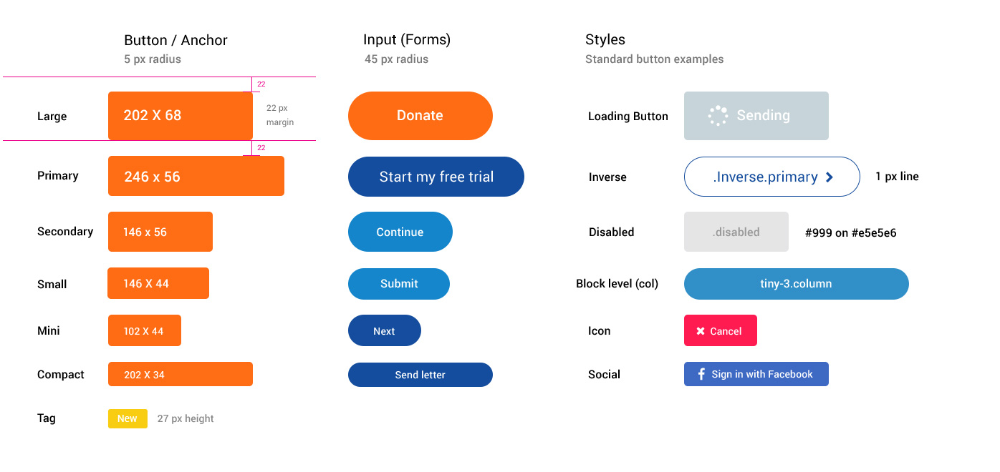

<section class="buttons ju-width">

    <h1>Buttons</h1>
    <br>
    <h3>JU buttons</h3>

    

    <h3>JU buttons Generator</h3>

    <create-button colors="Buttons.buttonColors" sizes="Buttons.buttonSizes"></create-button>

    <div class="ju-row">
        <br>
        <br>
        <br>
        <h3>Social buttons</h3>
        <button class="Button Button--compact u-SocialBg-facebook u-Radios-width5">
            <i class="fa fa-facebook-official"></i> Sign in with Facebook
        </button>

        <button class="Button Button--compact u-SocialBg-twitter u-Radios-width5">
            <i class="fa fa-twitter"></i> Sign in with twitter
        </button>
    </div>

</section>

